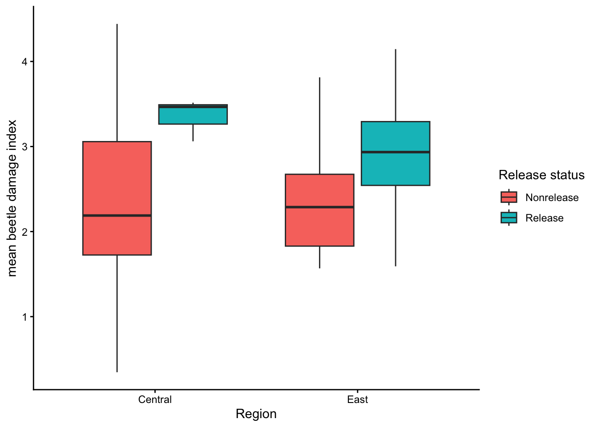
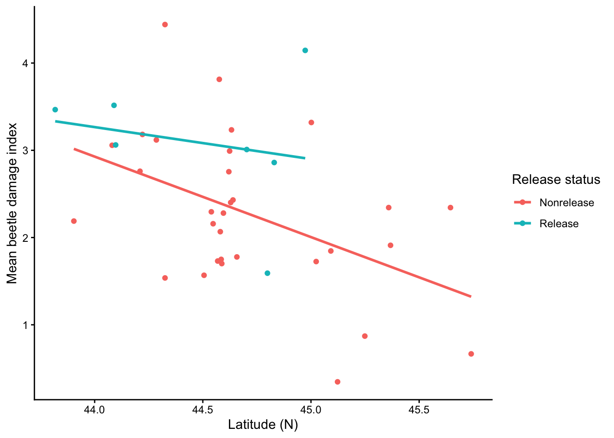
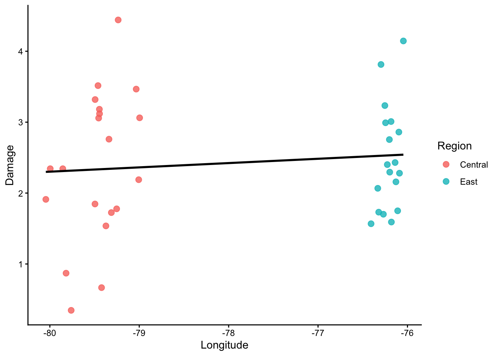

# Name - Queen's Student Number
# 1. Ziadie Diebel - 20463388
# 2. Member 2 - Student ID
# 3. Member 3 - Student ID
# 4. Member 4 - Student IDBIOL343 Coding Challenge 6: Interactions, collinearity and false positives
Group Members
DO THIS FIRST
Copy and paste these two lines into your R Console to install the current positpal, then restart R (Session → Restart R, or the restart button in the Console) before anything else. Do not include them as a code chunk.
install.packages("remotes")
remotes::install_url("https://quantitative.bio/downloads/positpal.tar.gz", upgrade = "never")After the restart, paste this line, replacing FILENAME.Rmd with the name you are going to use for the .R or .Rmd file you are going to upload (rename the template first, e.g. Group_#_CC6.Rmd, and use that exact name):
positpal::start("FILENAME.Rmd")Before you run it: create or open an R project folder for this challenge so that it is your working directory, then save this file in that folder under the name you will upload, and check that autosave is on (File → Auto Save). Closing the laptop or quitting Positron does not lose your log: when you reopen the project folder, positpal picks up where you left off and says so in the Console after your first command. Every time you open Positron to work on this file, run the start() line again, even if positpal says it picked up where you left off; it continues the same log and never erases it. See OnQ and use the positpal chatbot if you are having trouble with positpal.
Part 1 — Import and inspect
The data file is data/loosestrife.csv: one row per stand of purple loosestrife (Lythrum salicaria) in Ontario, with the region, whether Galerucella beetles were released there, the site’s latitude and longitude, three measures of the plants, and the mean beetle damage index. The instructions describe the study, the variables and the three hypotheses. Do not edit the file by hand.
Last week you fitted models with one or two predictors that act additively. This week you will let predictors interact, see what happens when two predictors carry the same information, and count how often a test can be wrong.
As in earlier challenges, the tasks tell you what to produce, not which function to use. The starter lines in some chunks are commented out so that the blank template knits; remove the # as you fill them in.
Import and inspect the data
Import the data as an object called lythrum and check its structure. Then use dplyr to keep only the Central and East sites, save the result as lythrum_ce, and count the sites in each combination of region and release. Use lythrum_ce for the rest of the challenge.
library(tidyverse)── Attaching core tidyverse packages ──────────────────────── tidyverse 2.0.0 ──
✔ dplyr 1.2.1 ✔ readr 2.2.0
✔ forcats 1.0.1 ✔ stringr 1.6.0
✔ ggplot2 4.0.3 ✔ tibble 3.3.1
✔ lubridate 1.9.5 ✔ tidyr 1.3.2
✔ purrr 1.2.2
── Conflicts ────────────────────────────────────────── tidyverse_conflicts() ──
✖ dplyr::filter() masks stats::filter()
✖ dplyr::lag() masks stats::lag()
ℹ Use the conflicted package (<http://conflicted.r-lib.org/>) to force all conflicts to become errors# Import and inspect data
lythrum= read.csv("data/loosestrife.csv")
head(lythrum) site latitude longitude region release stemsper50m2 stemheight_cm
1 E10.MTALB 44.20960 -79.33869 Central Nonrelease 191 130
2 E11.JP 44.32528 -79.37285 Central Nonrelease 10 117
3 E12.HWY8.1 44.22103 -79.44601 Central Nonrelease 96 101
4 E13.HWY8.2 44.28527 -79.44429 Central Nonrelease 86 111
5 E14.HWY48 44.32518 -79.23592 Central Nonrelease 15 121
6 E16.ROG2 44.08084 -79.45420 Central Nonrelease 166 152
inflorescences damage
1 2.15 2.760000
2 1.80 1.537037
3 3.95 3.181818
4 5.90 3.118644
5 2.30 4.441441
6 6.30 3.057554# Filter for Central and East sites only
lythrum_ce= lythrum |>
filter(region %in% c("Central", "East"))
# Count sites in each combination of region and release
lythrum_ce |>
count(region, release) region release n
1 Central Nonrelease 17
2 Central Release 3
3 East Nonrelease 14
4 East Release 4Question 1: How many sites are in each of the four combinations of region and release? Why might the small number of release sites be a problem when you test region and release in the same model?
Answer: In the Central region, there are 17 non-release sites and 3 release sites. In the East region, there are 14 non-release sites and 4 release sites, totaling to 38 sites in both region and for non-release vs release sites. Having so few release sites is a problem because it gives the statistical model very low statistical power. This makes standard errors much larger, which means it is very hard to detect real differences between groups. In addition, when sample sizes are that small, a single unusual data point can pull the group average in one direction, and the model becomes much more sensitive to violations of equal variance.
Part 2 — Interaction terms
Two categorical predictors
Draw a boxplot of damage by region, filled by release, with axis labels and a clean theme. Calculate the mean damage of each of the four region × release groups. Then fit a linear model of damage with region, release and their interaction as predictors, and print the summary and the ANOVA table.
# Boxplot of damage by region, filled by release
ggplot(lythrum_ce, aes(x= region, y= damage, fill= release)) +
geom_boxplot() +
labs(
x= "Region",
y= "mean beetle damage index",
fill= "Release status"
) +
theme_classic()
# Mean damage for each of the four region x release groups
group_means= lythrum_ce |>
group_by(region, release) |>
summarize(mean_damage= mean(damage, na.rm= TRUE), .groups= "drop")
group_means# A tibble: 4 × 3
region release mean_damage
<chr> <chr> <dbl>
1 Central Nonrelease 2.20
2 Central Release 3.35
3 East Nonrelease 2.37
4 East Release 2.90# Fit linear model with interaction and print summary + ANOVA table
int_mod= lm(damage ~ region * release, data= lythrum_ce)
summary(int_mod)
Call:
lm(formula = damage ~ region * release, data = lythrum_ce)
Residuals:
Min 1Q Median 3Q Max
-1.85564 -0.46394 -0.02735 0.51470 2.23944
Coefficients:
Estimate Std. Error t value Pr(>|t|)
(Intercept) 2.2020 0.2145 10.268 5.9e-12 ***
regionEast 0.1677 0.3191 0.526 0.6026
releaseRelease 1.1456 0.5537 2.069 0.0462 *
regionEast:releaseRelease -0.6140 0.7469 -0.822 0.4168
---
Signif. codes: 0 '***' 0.001 '**' 0.01 '*' 0.05 '.' 0.1 ' ' 1
Residual standard error: 0.8842 on 34 degrees of freedom
Multiple R-squared: 0.1406, Adjusted R-squared: 0.06477
F-statistic: 1.854 on 3 and 34 DF, p-value: 0.156anova(int_mod)Analysis of Variance Table
Response: damage
Df Sum Sq Mean Sq F value Pr(>F)
region 1 0.1232 0.1232 0.1576 0.6939
release 1 3.6977 3.6977 4.7294 0.0367 *
region:release 1 0.5283 0.5283 0.6757 0.4168
Residuals 34 26.5837 0.7819
---
Signif. codes: 0 '***' 0.001 '**' 0.01 '*' 0.05 '.' 0.1 ' ' 1Question 2: Using only the estimates in the summary, calculate the mean damage of each of the four groups, and check them against the four group means you calculated at the start of this task. Is the interaction positive (synergistic) or negative (antagonistic), and is it significant? What do you conclude about hypotheses 1 and 2?
Answer: Using the model summary where Central and Nonrelease are the baselines, the mean damage for Central non-release sites is the intercept alone, which is 2.202. For East non-release sites, we add the release slope to get 2.202 + 1.146 = 3.348. Finally for East release sites, we add all terms including the interaction to get 2.202 + 0.168 + 1.146 - 0.614 = 2.901. These match the calculated group means exactly. The interaction terms slope is negative at -0.614, meaning it is antagonistic because the boost in damage from releasing beetles is smaller in the East than in Central Ontario. However, this interaction is not statistically significant because the p-value is 0.417. Based on this, we do not support Hypothesis 1 because damage does not significantly differ between regions (p = 0.69), but we do support Hypothesis 2 because releasing beetles significantly increase plant damage in the baseline region (p = 0.04).
A continuous and a categorical predictor
Plot damage (y) against latitude (x), coloured by release, with a fitted straight line for each release group, axis labels with units, a legend title and a clean theme. Then fit a linear model of damage with latitude, release and their interaction as predictors, and print the summary and the ANOVA table.
# Scatterplot of damage vs. latitude colored by release with fitted lines
ggplot(lythrum_ce, aes(x= latitude, y= damage, colour= release)) +
geom_point() +
geom_smooth(method= "lm", se= FALSE) +
labs(
x= "Latitude (N)",
y= "Mean beetle damage index",
colour= "Release status"
) +
theme_classic()
# Fit linear model with interaction and print summary and ANOVA table
lat_mod= lm(damage ~ latitude * release, data= lythrum_ce)
summary(lat_mod)
Call:
lm(formula = damage ~ latitude * release, data = lythrum_ce)
Residuals:
Min 1Q Median 3Q Max
-1.54544 -0.61446 -0.03687 0.44032 1.81369
Coefficients:
Estimate Std. Error t value Pr(>|t|)
(Intercept) 43.5218 14.9103 2.919 0.00619 **
latitude -0.9226 0.3335 -2.766 0.00910 **
releaseRelease -24.1305 35.2608 -0.684 0.49840
latitude:releaseRelease 0.5561 0.7921 0.702 0.48741
---
Signif. codes: 0 '***' 0.001 '**' 0.01 '*' 0.05 '.' 0.1 ' ' 1
Residual standard error: 0.8047 on 34 degrees of freedom
Multiple R-squared: 0.2882, Adjusted R-squared: 0.2254
F-statistic: 4.589 on 3 and 34 DF, p-value: 0.008395anova(lat_mod)Analysis of Variance Table
Response: damage
Df Sum Sq Mean Sq F value Pr(>F)
latitude 1 6.4661 6.4661 9.9852 0.003307 **
release 1 2.1304 2.1304 3.2899 0.078542 .
latitude:release 1 0.3192 0.3192 0.4929 0.487413
Residuals 34 22.0172 0.6476
---
Signif. codes: 0 '***' 0.001 '**' 0.01 '*' 0.05 '.' 0.1 ' ' 1Question 3: Write the fitted equation (intercept and slope) for the non-release sites and for the release sites. What does the interaction estimate mean in this model? Is there evidence that the slope of damage against latitude differs between release and non-release sites?
Answer: For the non-release sites, the fitted equation is: Damage = - 0.923X + 43.52 Latitude For the release sites, combining the baseline numbers with the release adjustments gives the equation: Damage = -0.367X + 19.99 Latitude. In this model, the interaction estimate represents the difference between the two slopes, telling us how much the effect of latitude on damage changes when moving from a non-release site to a release site. There is no statistical evidence that the slopes differ because the interaction term has a p-valye of 0.487, meaning the two trend lines are essentially parallel.
Part 3 — Collinearity
Region and longitude
Plot longitude by region. Calculate the correlations among the five continuous columns (latitude, longitude and the three plant measures). Then fit three linear models of damage: one with region as the only predictor, one with longitude as the only predictor, and one with both, and print the three summaries.
# Plot longitude by region
ggplot(lythrum_ce, aes(x = longitude, y = damage)) +
geom_point(aes(color= region), size = 2.5, alpha = 0.8) +
geom_smooth(method= "lm", se= FALSE, colour= "black") +
labs(
x= "Longitude",
y= "Damage",
color = "Region"
) +
theme_classic()`geom_smooth()` using formula = 'y ~ x'
# Correlations among the five continuous columns
lythrum_ce |>
select(latitude, longitude, stemsper50m2, stemheight_cm, inflorescences) |>
cor(use= "complete.obs") |>
round(3) latitude longitude stemsper50m2 stemheight_cm inflorescences
latitude 1.000 -0.135 -0.136 -0.220 -0.364
longitude -0.135 1.000 0.261 0.084 0.431
stemsper50m2 -0.136 0.261 1.000 0.110 -0.002
stemheight_cm -0.220 0.084 0.110 1.000 0.375
inflorescences -0.364 0.431 -0.002 0.375 1.000# Three linear models
m_reg= lm(damage ~ region, data= lythrum_ce)
m_lon= lm(damage ~ longitude, data= lythrum_ce)
m_both= lm(damage ~ region + longitude, data= lythrum_ce)
summary(m_reg)
Call:
lm(formula = damage ~ region, data = lythrum_ce)
Residuals:
Min 1Q Median 3Q Max
-2.02748 -0.63578 -0.07173 0.68659 2.06759
Coefficients:
Estimate Std. Error t value Pr(>|t|)
(Intercept) 2.3738 0.2069 11.476 1.39e-13 ***
regionEast 0.1140 0.3006 0.379 0.707
---
Signif. codes: 0 '***' 0.001 '**' 0.01 '*' 0.05 '.' 0.1 ' ' 1
Residual standard error: 0.9251 on 36 degrees of freedom
Multiple R-squared: 0.003982, Adjusted R-squared: -0.02368
F-statistic: 0.1439 on 1 and 36 DF, p-value: 0.7066summary(m_lon)
Call:
lm(formula = damage ~ longitude, data = lythrum_ce)
Residuals:
Min 1Q Median 3Q Max
-1.9698 -0.6063 -0.1171 0.7035 2.0934
Coefficients:
Estimate Std. Error t value Pr(>|t|)
(Intercept) 7.15310 7.09886 1.008 0.32
longitude 0.06064 0.09108 0.666 0.51
Residual standard error: 0.9213 on 36 degrees of freedom
Multiple R-squared: 0.01216, Adjusted R-squared: -0.01528
F-statistic: 0.4433 on 1 and 36 DF, p-value: 0.5098summary(m_both)
Call:
lm(formula = damage ~ region + longitude, data = lythrum_ce)
Residuals:
Min 1Q Median 3Q Max
-1.76406 -0.68322 -0.01467 0.64388 1.74902
Coefficients:
Estimate Std. Error t value Pr(>|t|)
(Intercept) 114.3125 50.5528 2.261 0.0301 *
regionEast -4.4719 2.0906 -2.139 0.0395 *
longitude 1.4087 0.6362 2.214 0.0334 *
---
Signif. codes: 0 '***' 0.001 '**' 0.01 '*' 0.05 '.' 0.1 ' ' 1
Residual standard error: 0.8787 on 35 degrees of freedom
Multiple R-squared: 0.1264, Adjusted R-squared: 0.07645
F-statistic: 2.531 on 2 and 35 DF, p-value: 0.09402Question 4: Which two predictors are collinear, and why would you expect that from how the regions are defined? Does your correlation table show it? Compare the estimates, standard errors and p-values for region and longitude across the three models. Why does the model with both predictors find “significant” effects that neither predictor shows alone? Which predictor would you keep, and why?
Answer: Region and longitude are collinear because the Central and East regions in Ontario are defined by an east-to-west line, making region just a simplified categorical version of longitude. The correlation table does not show this relationship because correlation functions only work on numeric variables and cannot include categorical columns like region, though the boxplot shows that their geographic ranges barely overlap. When looking at each predictor alone, neither region (p = 0.0.707) or longitude (p = 0.510) has significant relationship with damage, and both have small standard errors. However, when put together in the same model, the standard errors jump dramatically and both variables suddenly appear statistically significant with large, opposite signs. This happens because the model suffers from severe multicollinearity, where two redundant variables fight over the exact same information and artificially inflate each other’s effects. Between the two, we should keep longitude because it is an objective, continuous measurement that does not lose detail by grouping sites into arbitrary categories.
Part 4 — False positives and model accuracy
Three tests of hypothesis 3
Hypothesis 3 says that beetle damage reduces the abundance of the plant and changes its growth form. Fit three linear models, one for each plant measure (stem density, stem height and inflorescences) as the response, each with damage as the only predictor, and print the three summaries.
# Fit separate linear models for each plant response
m_dens= lm(stemsper50m2 ~ damage, data= lythrum_ce)
m_height= lm(stemheight_cm ~ damage, data= lythrum_ce)
m_infl= lm(inflorescences ~ damage, data= lythrum_ce)
summary(m_dens)
Call:
lm(formula = stemsper50m2 ~ damage, data = lythrum_ce)
Residuals:
Min 1Q Median 3Q Max
-146.52 -85.57 -41.26 46.83 413.55
Coefficients:
Estimate Std. Error t value Pr(>|t|)
(Intercept) 104.65 58.56 1.787 0.0823 .
damage 12.27 22.61 0.543 0.5906
---
Signif. codes: 0 '***' 0.001 '**' 0.01 '*' 0.05 '.' 0.1 ' ' 1
Residual standard error: 125.7 on 36 degrees of freedom
Multiple R-squared: 0.008117, Adjusted R-squared: -0.01944
F-statistic: 0.2946 on 1 and 36 DF, p-value: 0.5906summary(m_height)
Call:
lm(formula = stemheight_cm ~ damage, data = lythrum_ce)
Residuals:
Min 1Q Median 3Q Max
-57.005 -11.247 0.573 12.482 39.341
Coefficients:
Estimate Std. Error t value Pr(>|t|)
(Intercept) 117.415 10.177 11.537 1.19e-13 ***
damage 1.216 3.929 0.309 0.759
---
Signif. codes: 0 '***' 0.001 '**' 0.01 '*' 0.05 '.' 0.1 ' ' 1
Residual standard error: 21.85 on 36 degrees of freedom
Multiple R-squared: 0.002651, Adjusted R-squared: -0.02505
F-statistic: 0.09571 on 1 and 36 DF, p-value: 0.7588summary(m_infl)
Call:
lm(formula = inflorescences ~ damage, data = lythrum_ce)
Residuals:
Min 1Q Median 3Q Max
-4.4959 -2.2125 -0.2706 1.1418 7.3569
Coefficients:
Estimate Std. Error t value Pr(>|t|)
(Intercept) 3.1404 1.4545 2.159 0.0376 *
damage 0.8230 0.5616 1.466 0.1514
---
Signif. codes: 0 '***' 0.001 '**' 0.01 '*' 0.05 '.' 0.1 ' ' 1
Residual standard error: 3.123 on 36 degrees of freedom
Multiple R-squared: 0.05631, Adjusted R-squared: 0.0301
F-statistic: 2.148 on 1 and 36 DF, p-value: 0.1514Question 5: Do any of the three models support hypothesis 3? Suppose damage had no effect at all on any of the three measures. What is the probability that at least one of three independent tests gives p < 0.05 by chance? What does that mean for a study that tests many responses or many predictors?
Answer: None of the three models support Hypothesis 3 because all three p-values are well above 0.05 (stem density has p = 0.591, stem height has p = 0.759, and inflorescenes has p = 0.151). If damage actually had no effect at all on any of the plant measures, the probability of getting no false positives across three independent tests is 0.95 X 0.95 X 0.95 = 0.8574, which means the probability of getting at least one false positive purely by chance is 1 - 0.8574 = 0.1426 or about 14.3%. For a study testing many responses or predictors, this means the risk of finding false positives increases rapidly with every additional test. Without using statistical corrections, researchers are likely to mistake random chance for a real biological effect.
How good is a quick field check?
A manager suggests a cheap way to tell whether beetles were released at a site without checking the records: call it a release site if its damage index is 3 or more. Add a column to lythrum_ce with this prediction, and make a table of the predicted against the actual release status. Treating “release” as a positive result, count the true positives, false positives, true negatives and false negatives, and calculate the accuracy, sensitivity, specificity and false discovery rate of the check.
# Predict release status based on damage threshold >= 3
lythrum_ce= lythrum_ce |>
mutate(pred_release = if_else(damage >= 3, "Release", "Nonrelease"))
# Confusion matrix: Predicted (rows) vs Actual (columns)
conf_matrix= table(
Predicted= lythrum_ce$pred_release,
Actual= lythrum_ce$release
)
conf_matrix Actual
Predicted Nonrelease Release
Nonrelease 24 2
Release 7 5# Extract classification counts (Release is the positive condition)
TP= conf_matrix["Release", "Release"]
FP= conf_matrix["Release", "Nonrelease"]
TN= conf_matrix["Nonrelease", "Nonrelease"]
FN= conf_matrix["Nonrelease", "Release"]
# Calculate performance metrics
accuracy= (TP + TN)/ (TP + FP + TN + FN)
sensitivity= TP / (TP + FN)
specificity= TN / (TN + FP)
fdr= FP / (TP + FP)
# Summary table
tibble(
Metric= c("Accuracy", "Sensitivity", "Specificity", "False Discovery Rate (FDR)"),
Value= round(c(accuracy, sensitivity, specificity, fdr), 4)
)# A tibble: 4 × 2
Metric Value
<chr> <dbl>
1 Accuracy 0.763
2 Sensitivity 0.714
3 Specificity 0.774
4 False Discovery Rate (FDR) 0.583Question 6: Report the four rates. Why is the false discovery rate so much higher than you might expect from the accuracy? If the manager’s goal is to find every release site so that it can be monitored, should the check be more sensitive or more specific, and which way would you move the threshold of 3?
Answer: The field check has an accuracy of 0.7632 (76.3%), a sensitivity of 0.7143 (71.4%), a specificity of 0.7742 (77.4%), and a false discovery rate of 0.5833 (58.3%). The false discovery rate is much higher than expected because release sites are relatively rare in the landscape, making up only 7 out of 38 sites. Because most sites are non-release sites, even a fairly small false positive rate creates 7 false alarms, which outnumbers the 5 sites correctly identified as release. If the manager wants to find every single release site and avoid missing any, the field check needs to be more sensitive . To achieve higher sensitivity, the manager should lower the damage threshold below 3 so that more release sites are flagged, even though this will create more false positives.
DO THIS LAST
When your document is finished, knit it, open the .html in a web browser and print it to PDF (File → Print → Save as PDF; name it Group_#_CC6.pdf). Then copy and paste this into the R Console to stop positpal and create your coding log. Do not include it as a code chunk.
positpal::stop_capture()
positpal::export_capture()export_capture() prints the name and location of the my-capture-YYYYMMDD-HHMMSS.zip it creates beside this file. Each group member uploads their own .zip to the “CC6 — Coding Log (individual)” dropbox on OnQ; the group’s .Rmd and the .pdf (not the .html — OnQ shows uploaded HTML as source code, not as a page) go to your section’s TUT02-CC6 or TUT03-CC6 folder. Submissions without the log are incomplete. If export_capture() fails, zip the .capture folder yourself and upload that instead.